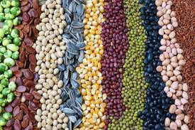

Harvesting Hope: Sustainable Farming Practices in a Changing Climate
Climate change is posing a serious threat to global food security. Rising temperatures, erratic rainfall patterns, and extreme weather events are disrupting agricultural production worldwide. However, there's hope. By adopting sustainable farming practices, farmers can increase their resilience to climate change and ensure a stable food supply for future generations.

Sustainable Practices for a Changing Climate
Water Conservation
With droughts becoming more frequent, efficient water management is crucial. Techniques like drip irrigation, mulching, and rainwater harvesting can significantly reduce water usage.
Soil Health

Healthy soil retains moisture better, reduces erosion, and improves crop yields. Practices like cover cropping, crop rotation, and reducing tillage all contribute to building healthy soil.
Crop Diversity
Planting a variety of crops instead of monocultures makes farms more resilient to pests and diseases, which can thrive under warmer climates.
Climate-Smart Crop Varieties
Research is developing new crop varieties that are more tolerant of heat, drought, and other climate extremes.
Integrated Pest Management

IPM relies on natural predators, beneficial insects, and biological controls to manage pests, reducing reliance on harmful pesticides.
Agroforestry
Integrating trees into farms provides shade for crops, reduces wind erosion, and improves soil fertility.
Beyond Climate Change: The Additional Benefits of Sustainable Farming
Reduced Reliance on Chemical Inputs
Sustainable practices minimize the need for chemical fertilizers, pesticides, and herbicides. This lowers production costs for farmers, protects human health from exposure to harmful chemicals, and reduces water pollution caused by agricultural runoff.
Improved Soil Fertility
Sustainable practices like cover cropping and reduced tillage promote the growth of beneficial soil microbes and the breakdown of organic matter, leading to richer soil with improved nutrient content. This translates to higher crop yields in the long run and a decrease in the need for chemical fertilizers.
Enhanced Biodiversity
Diverse farms support a wider range of beneficial insects, pollinators, birds, and other wildlife. This creates a more balanced ecosystem that is less susceptible to pest outbreaks and promotes natural pest control. Additionally, a healthy and diverse pollinator population is crucial for ensuring the reproduction of many flowering crops.
Improved Water Quality
Sustainable practices like reducing tillage and using cover crops minimize soil erosion and prevent agricultural runoff from polluting waterways. This protects aquatic ecosystems and ensures clean drinking water for communities.
Challenges
Transition Costs
Adopting new practices may require upfront investments in equipment, infrastructure, and training.
Market Access
Farmers practicing sustainable methods may need support in finding markets that value and pay a premium for sustainable produce.
Policy and Incentives
Government policies that incentivize sustainable practices and discourage environmentally harmful ones can play a crucial role in promoting wider adoption.
Opportunities
Consumer Demand
Consumers are increasingly interested in purchasing food grown sustainably. This growing demand creates a market advantage for farmers who adopt sustainable practices.
Technological Innovation
Advancements in precision agriculture technologies, such as soil sensors and data analysis tools, can help farmers optimize resource use and improve efficiency.
Collaboration
Sharing knowledge and best practices among farmers, researchers, and policymakers can accelerate the transition to sustainable agriculture.
Emerging Trends in Sustainable Farming
AgTech Revolution
The intersection of agriculture and technology, known as AgTech, is revolutionizing the way farms operate. From drones and satellite imagery for crop monitoring to blockchain technology for transparent supply chains, AgTech offers innovative solutions to agricultural challenges.
Carbon Farming
Carbon farming practices aim to move carbon dioxide from the atmosphere into the soil, helping mitigate climate change. Techniques like no-till farming, cover cropping, and agroforestry not only reduce carbon emissions but also improve soil health and fertility.
Urban Agriculture
As urban populations grow, urban agriculture is gaining traction as a way to produce fresh food locally. Rooftop gardens, hydroponic systems, and community gardens bring agriculture closer to urban dwellers, reducing food miles and promoting food security.
Conclusion: A Call to Action
Building a future with a resilient agricultural sector and a healthy planet requires a collective effort. Here's how each of us can play a role:
Farmers
Embrace sustainable practices and seek out resources and support to overcome challenges.
Consumers
Choose to buy local, seasonal produce from farms committed to sustainability.
Policymakers
Enact policies that incentivize sustainable agriculture and discourage harmful practices.
Researchers
Develop climate-smart crop varieties and innovative farming techniques.
By working together, we can cultivate a future where healthy food and a healthy planet go hand in hand.